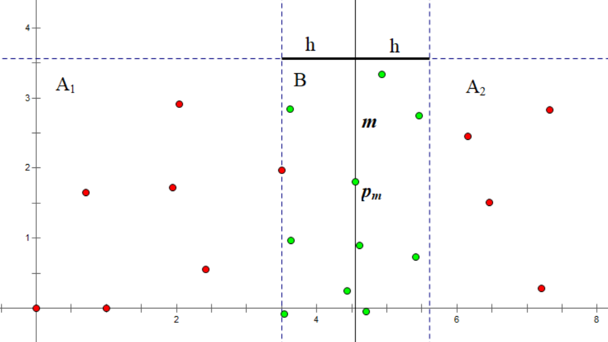
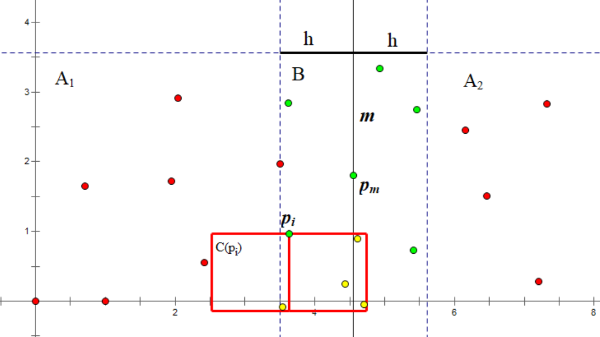
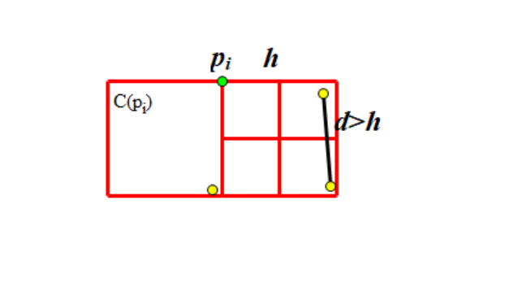

OI Wiki · prijevod · Računska geometrijaOI Wiki · translation · Computational geometry
Najbliži par točaka u ravniniClosest pair of points in the plane
Sadržaj
Uvod
Zadano je \(n\) točaka u ravnini; treba pronaći par točaka s najmanjom euklidskom udaljenošću.
U nastavku predstavljamo algoritam podijeli pa vladaj (divide and conquer) vremenske složenosti \(O(n\log n)\) koji rješava taj problem. Algoritam je 1975. godine predložio Franco P. Preparata, a Preparata i Michael Ian Shamos dokazali su da je algoritam optimalan u modelu stabla odlučivanja.
Postupak
Kao i kod uobičajenih algoritama podijeli pa vladaj, skup od \(n\) točaka dijelimo na dva jednako velika skupa \(S_1, S_2\) i rekurzivno nastavljamo. No nailazimo na poteškoću: kako spojiti rezultate? Odnosno, kako pronaći najbliži par točaka u kojem je jedna točka u \(S_1\), a druga u \(S_2\)? Pretpostavimo zasad da operacija spajanja ima vremensku složenost \(O(n)\); tada je ukupna složenost algoritma \(T(n) = 2T(\frac{n}{2}) + O(n) = O(n\log n)\).
Najprije sve točke sortiramo tako da je \(x_i\) prvi ključ, a \(y_i\) drugi ključ, te s točkom \(p_m (m = \lfloor \frac{n}{2} \rfloor)\) kao granicom skup točaka dijelimo na \(A_1,A_2\):
i rekurzivno nastavljamo te pronalazimo najbliži par točaka unutar svakog od dvaju skupova; neka su te udaljenosti \(h_1,h_2\), a manju od njih označimo s \(h\).
Sad slijedi spajanje! Pokušavamo pronaći par točaka od kojih jedna pripada skupu \(A_1\), druga skupu \(A_2\), a njihova je udaljenost manja od \(h\). Zato sve točke čija se x-koordinata od \(x_m\) razlikuje za manje od \(h\) stavljamo u skup \(B\):
Pogledajmo sliku: pravac \(m\) dijeli točke na dva dijela. Lijevo od \(m\) je skup točaka \(A_1\), a desno skup točaka \(A_2\).
Zatim prema pravilu \(B = \{ p_i \ \big | \ \lvert x_i - x_m \rvert < h \}\) dobivamo skup točaka \(B\) koji čine zelene točke.

Za svaku točku \(p_i\) iz \(B\) trenutačni nam je cilj pronaći točku koja je također u \(B\) i čija je udaljenost do nje manja od \(h\). Da dvije točke ne bismo razmatrali međusobno dvaput, razmatramo samo one točke čija je y-koordinata manja od \(y_i\). Očito za valjanu točku \(p_j\) vrijednost \(y_i - y_j\) mora biti manja od \(h\). Tako dobivamo skup \(C(p_i)\):
Odaberemo točku \(p_i\) u skupu točaka \(B\) i prema pravilu \(C(p_i) = \{ p_j\ \big |\ p_j \in B,\ y_i - h < y_j \le y_i \}\) dobivamo skup točaka \(C\) koji čine žute točke unutar crvenog pravokutnika.

Ako točke iz \(B\) sortiramo po \(y_i\), skup \(C(p_i)\) vrlo se lako dobiva: to je nekoliko uzastopnih točaka neposredno uz \(p_i\).
Time dobivamo korake spajanja:
- Izgradimo skup \(B\).
- Sortiramo točke iz \(B\) po \(y_i\). Uobičajeno je to \(O(n\log n)\), ali promjenom strategije možemo to optimirati na \(O(n)\) (objašnjeno u nastavku).
- Za svaku \(p_i \in B\) razmatramo \(p_j \in C(p_i)\); za svaki par \((p_i,p_j)\) izračunamo udaljenost i ažuriramo odgovor (najbliži par točaka u skupu koji trenutačno obrađujemo).
Primijetite da smo gore spomenuli dva sortiranja. Budući da se koordinate točaka cijelo vrijeme ne mijenjaju, prvo sortiranje možemo obaviti samo jednom, prije početka podjele. Neka svaki rekurzivni poziv vrati trenutačni skup točaka sortiran po \(y_i\); za drugo sortiranje viša razina samo spoji (merge) dva zasebno sortirana skupa točaka iz niže razine.
Čini se da algoritam još uvijek nije dovoljno dobar: \(|C(p_i)|\) bit će reda veličine \(O(n)\), pa ukupna složenost ne bi bila točna. No nije tako — njegova je najveća veličina \(7\), a evo dokaza:
Dokaz složenosti
Već znamo da su y-koordinate svih točaka iz \(C(p_i)\) u rasponu \((y_i-h,y_i]\) te da su x-koordinate svih točaka iz \(C(p_i)\), kao i same točke \(p_i\), u rasponu \((x_m-h,x_m+h)\). To čini pravokutnik dimenzija \(2h \times h\).
Taj pravokutnik razdvojimo na dva kvadrata \(h \times h\). Ne računajući \(p_i\), točke u jednom kvadratu čine \(C(p_i) \cap A_1\), a u drugom \(C(p_i) \cap A_2\), pri čemu je udaljenost između bilo kojih dviju točaka unutar istog kvadrata veća od \(h\). (Jer potječu iz iste niže razine rekurzije.)
Kvadrat \(h \times h\) razdvojimo na četiri mala kvadrata \(\frac{h}{2} \times \frac{h}{2}\). Vidimo da u svakom malom kvadratu može biti najviše \(1\) točka: najveća udaljenost dviju točaka u tom malom kvadratu jednaka je duljini njegove dijagonale, tj. \(\frac{h}{\sqrt 2}\), što je manje od \(h\).

Stoga u svakom kvadratu ima najviše \(4\) točke, u pravokutniku najviše \(8\) točaka, a kad izuzmemo samu \(p_i\), \(\max(C(p_i))=7\).
Referentna implementacija
#include <algorithm>
#include <cstdio>
#include <vector>
using namespace std;
const int N = 500000 + 10;
struct point {
int x, y, id;
};
int n, A, B;
point a[N];
// mindist je kvadrat najmanje udaljenosti
long long mindist;
// ažuriranje odgovora
void upd_ans(const point& a, const point& b) {
long long dist =
1LL * (a.x - b.x) * (a.x - b.x) + 1LL * (a.y - b.y) * (a.y - b.y);
if (dist < mindist) {
mindist = dist;
A = a.id;
B = b.id;
}
}
// trenutačni interval podjele označavamo s [l, r)
void DC(int l, int r) {
// trenutačni interval sadrži samo jednu točku, odmah se vraćamo
if (l + 1 == r) return;
int m = (l + r) >> 1;
int midx = a[m].x;
DC(l, m);
DC(m, r);
// spajanje (merge sort) pomoću std::inplace_merge()
inplace_merge(a + l, a + m, a + r,
[&](point a, point b) { return a.y < b.y; });
vector<point> t;
for (int i = l; i < r; i++)
// pri usporedbi udaljenosti pazi na kvadrate i ne uzimaj jednakost
if (1LL * (a[i].x - midx) * (a[i].x - midx) < mindist) t.push_back(a[i]);
for (int i = 0; i < t.size(); i++)
for (int j = i + 1; j < t.size(); j++) {
if (1LL * (t[i].y - t[j].y) * (t[i].y - t[j].y) >= mindist) break;
upd_ans(t[i], t[j]);
}
}
void Solve() {
scanf("%d", &n);
for (int i = 0; i < n; i++) {
scanf("%d %d", &a[i].x, &a[i].y);
a[i].id = i;
}
// prije poziva sortiraj po x-koordinati
sort(a, a + n, [&](point x, point y) { return x.x < y.x; });
mindist = 9'000'000'000'000'000'000LL;
DC(0, n);
printf("%d %d\n", A, B);
}
int main() {
int T;
scanf("%d", &T);
while (T--) Solve();
return 0;
}
Poopćenje: trokut najmanjeg opsega u ravnini
Gornji se algoritam na zanimljiv način poopćuje na sljedeći problem: među zadanim točkama odabrati tri točke tako da zbroj njihovih međusobnih udaljenosti bude najmanji.
Algoritam uglavnom ostaje isti: svaki put pokušavamo pronaći trokut opsega manjeg od trenutačnog odgovora \(d\), sve točke čija se x-koordinata od \(x_m\) razlikuje za manje od \(\frac{d}{2}\) stavljamo u skup \(B\) i pokušavamo ažurirati odgovor. (Najdulja stranica trokuta opsega \(d\) manja je od \(\frac{d}{2}\).)
Algoritam bez podjele pa vladanja
Zapravo, osim gore opisanog algoritma podijeli pa vladaj, postoji i drugi algoritam, bez podjele pa vladanja, iste vremenske složenosti \(O(n \log n)\).
Možemo se poslužiti uobičajenom idejom pri obradi nizova: za svaki element u odgovor dodamo doprinos njega i svih elemenata lijevo od njega. Ista se ideja može primijeniti i na problem najbližeg para točaka u ravnini.
Konkretno, sve točke sortiramo tako da je \(x_i\) prvi ključ, a \(y_i\) drugi ključ, te izgradimo multiset s ključem \(y_i\). Za svaku poziciju \(i\) izvodimo sljedeće operacije:
- Iz skupa brišemo sve točke za koje vrijedi \(x_i - x_j \ge d\). One više ne mogu pridonijeti odgovoru.
- Za sve točke u skupu za koje vrijedi \(\lvert y_i - y_j \rvert < d\) izračunamo njihovu udaljenost do \(p_i\).
- Ubacimo \(p_i\) u skup.
Budući da se svaka točka ubacuje i briše najviše jednom, vremenska složenost ubacivanja i brisanja točaka je \(O(n \log n)\), a dokaz vremenske složenosti dijela koji računa odgovor sličan je dokazu vremenske složenosti algoritma podijeli pa vladaj; čitatelj ga može sam pokušati provesti.
Referentna implementacija
#include <algorithm>
#include <cmath>
#include <cstdio>
#include <set>
using namespace std;
constexpr int N = 500000 + 10;
struct point {
int x, y, id;
point() {}
bool operator<(const point& a) const {
return x < a.x || (x == a.x && y < a.y);
}
};
int n, A, B;
long long mindist;
point a[N];
void upd_ans(const point& a, const point& b) {
long long dist =
1LL * (a.x - b.x) * (a.x - b.x) + 1LL * (a.y - b.y) * (a.y - b.y);
if (dist < mindist) {
mindist = dist;
A = a.id;
B = b.id;
}
}
void Solve() {
scanf("%d", &n);
for (int i = 0; i < n; i++) {
scanf("%d %d", &a[i].x, &a[i].y);
a[i].id = i;
}
sort(a, a + n);
multiset<pair<double, point>> s;
mindist = 9'000'000'000'000'000'000LL;
for (int i = 0, l = 0; i < n; i++) {
for (; l < i && 1LL * (a[i].x - a[l].x) * (a[i].x - a[l].x) >= mindist; l++)
s.erase(s.find({a[l].y, a[l]}));
// pazi na pogrešku zaokruživanja realnih brojeva
for (auto it =
s.lower_bound({(double)a[i].y - sqrt(mindist) + 1e-6, point()});
it != s.end() &&
1LL * (it->first - a[i].y) * (it->first - a[i].y) < mindist;
it++)
upd_ans(it->second, a[i]);
s.insert({a[i].y, a[i]});
}
printf("%d %d\n", A, B);
}
int main() {
int T;
scanf("%d", &T);
while (T--) Solve();
return 0;
}
Pristup s očekivanim linearnim vremenom
Zapravo, osim gore navedenih pristupa vremenske složenosti \(O(n \log n)\), postoji i algoritam očekivane složenosti \(O(n)\).
Najprije točke nasumično promiješamo; održavat ćemo odgovor za prefiks skupa točaka. Promotrimo kako iz prvih \(i - 1\) točaka dobiti odgovor za \(i\)-tu točku.
Neka je \(s\) udaljenost najbližeg para među prvih \(i - 1\) točaka. Ravninu podijelimo na mrežu ćelija sa stranicom \(s\) i za svaku ćeliju pohranimo točke u njoj (pomoću hash tablice), a zatim provjerimo sve točke u devet ćelija oko ćelije u kojoj se nalazi \(i\)-ta točka i ažuriramo odgovor. Primijetite da je broj točaka koje treba provjeriti \(O(1)\), jer je udaljenost najbližeg para među prvih \(i - 1\) točaka \(s\), pa svaka ćelija sadrži najviše \(4\) točke.
Ako se pritom odgovor promijeni, ponovno izgradimo mrežu; inače je ne izgrađujemo ponovno. Među prvih \(i\) točaka vjerojatnost da najbliži par sadrži \(i\) iznosi \(O\left(\frac{1}{i}\right)\), a cijena ponovne izgradnje mreže je \(O(i)\), pa je očekivana cijena za \(i\)-tu točku \(O(1)\). Stoga je za \(n\) točaka očekivana složenost algoritma \(O(n)\).
Zadaci za vježbu
- UVa 10245 "The Closest Pair Problem"[težina: niska]
- SPOJ #8725 CLOPPAIR "Closest Point Pair"[težina: niska]
- CODEFORCES Team Olympiad Saratov - 2011 "Minimum amount"[težina: srednja]
- SPOJ #7029 CLOSEST "Closest Triple"[težina: srednja]
- Google Code Jam 2009 Final "Min Perimeter"[težina: srednja]
Literatura i dodatno štivo
Dio ove stranice o algoritmu podijeli pa vladaj uglavnom je preveden iz članka Нахождение пары ближайших точек i njegova engleskog prijevoda Finding the nearest pair of points. Ruska je inačica pod licencijom Public Domain + Leave a Link, a engleska pod licencijom CC-BY-SA 4.0.
Zhihu kolumna: Računalna geometrija – problem najbližeg para točaka
Contents
Introduction
Given \(n\) points in the two-dimensional plane, find a pair of points with the smallest Euclidean distance.
Below we present a divide-and-conquer algorithm with time complexity \(O(n\log n)\) that solves this problem. The algorithm was proposed in 1975 by Franco P. Preparata, and Preparata and Michael Ian Shamos proved that it is optimal in the decision tree model.
Procedure
As with ordinary divide-and-conquer algorithms, we split this set of \(n\) points into two sets \(S_1, S_2\) of equal size and keep recursing. But we run into a difficulty: how do we merge? That is, how do we find the closest pair of points with one point in \(S_1\) and the other in \(S_2\)? For now, assume the merge operation takes \(O(n)\) time; then the total complexity of the algorithm is \(T(n) = 2T(\frac{n}{2}) + O(n) = O(n\log n)\).
We first sort all points with \(x_i\) as the first key and \(y_i\) as the second key, and use the point \(p_m (m = \lfloor \frac{n}{2} \rfloor)\) as the dividing point to split the point set into \(A_1,A_2\):
and recurse, finding the closest pair inside each of the two point sets; let the distances be \(h_1,h_2\) and let \(h\) be the smaller of the two.
Now it is time to merge! We try to find a pair of points, one belonging to \(A_1\) and the other to \(A_2\), whose distance is less than \(h\). Therefore we put all points whose x coordinate differs from \(x_m\) by less than \(h\) into the set \(B\):
Looking at the figure, the line \(m\) divides the points into two parts. To the left of \(m\) is the point set \(A_1\), and to the right is the point set \(A_2\).
Then, by the rule \(B = \{ p_i \ \big | \ \lvert x_i - x_m \rvert < h \}\), we obtain the point set \(B\) consisting of the green points.
For each point \(p_i\) in \(B\), our current goal is to find a point that is also in \(B\) and whose distance to it is less than \(h\). To avoid considering two points with respect to each other twice, we only consider points whose y coordinate is less than \(y_i\). Obviously, for a valid point \(p_j\), \(y_i - y_j\) must be less than \(h\). Thus we obtain a set \(C(p_i)\):
Pick a point \(p_i\) in the point set \(B\); by the rule \(C(p_i) = \{ p_j\ \big |\ p_j \in B,\ y_i - h < y_j \le y_i \}\) we obtain the point set \(C\) consisting of the yellow points inside the red rectangle.
If we sort the points of \(B\) by \(y_i\), \(C(p_i)\) is very easy to obtain: it is a few consecutive points immediately adjacent to \(p_i\).
This gives us the steps of the merge:
- Build the set \(B\).
- Sort the points of \(B\) by \(y_i\). The usual approach takes \(O(n\log n)\), but we can change the strategy to optimize it to \(O(n)\) (explained below).
- For each \(p_i \in B\) consider \(p_j \in C(p_i)\); for each pair \((p_i,p_j)\) compute the distance and update the answer (the closest pair of points in the set currently being processed).
Note that we mentioned sorting twice above. Since the point coordinates never change, the first sort can be done only once, before the divide and conquer starts. We let each recursive call return the current point set sorted by \(y_i\); for the second sort, the upper level simply merges the two separately sorted point sets of the lower level.
It seems that this algorithm is still not good enough: \(|C(p_i)|\) will be of order \(O(n)\), making the total complexity wrong. In fact this is not the case — its maximum size is \(7\), and we give the proof:
Complexity proof
We already know that the y coordinates of all points in \(C(p_i)\) lie in the range \((y_i-h,y_i]\), and that the x coordinates of all points in \(C(p_i)\), as well as of \(p_i\) itself, lie in the range \((x_m-h,x_m+h)\). This forms a \(2h \times h\) rectangle.
We split this rectangle into two \(h \times h\) squares. Ignoring \(p_i\), the points in one square are \(C(p_i) \cap A_1\) and the points in the other are \(C(p_i) \cap A_2\), and the distance between any two points inside the same square is greater than \(h\). (Because they come from the same lower level of the recursion.)
We split an \(h \times h\) square into four small \(\frac{h}{2} \times \frac{h}{2}\) squares. We can see that each small square contains at most \(1\) point: the maximum distance between any two points in such a small square is the length of its diagonal, i.e. \(\frac{h}{\sqrt 2}\), which is less than \(h\).
Hence each square contains at most \(4\) points, the rectangle contains at most \(8\) points, and after removing \(p_i\) itself, \(\max(C(p_i))=7\).
Reference implementation
#include <algorithm>
#include <cstdio>
#include <vector>
using namespace std;
const int N = 500000 + 10;
struct point {
int x, y, id;
};
int n, A, B;
point a[N];
// mindist is the square of the minimum distance
long long mindist;
// update the answer
void upd_ans(const point& a, const point& b) {
long long dist =
1LL * (a.x - b.x) * (a.x - b.x) + 1LL * (a.y - b.y) * (a.y - b.y);
if (dist < mindist) {
mindist = dist;
A = a.id;
B = b.id;
}
}
// the current divide-and-conquer interval is [l, r)
void DC(int l, int r) {
// the current interval contains only one point, return directly
if (l + 1 == r) return;
int m = (l + r) >> 1;
int midx = a[m].x;
DC(l, m);
DC(m, r);
// merge sort using std::inplace_merge()
inplace_merge(a + l, a + m, a + r,
[&](point a, point b) { return a.y < b.y; });
vector<point> t;
for (int i = l; i < r; i++)
// when comparing distances mind the squares, and use a strict inequality
if (1LL * (a[i].x - midx) * (a[i].x - midx) < mindist) t.push_back(a[i]);
for (int i = 0; i < t.size(); i++)
for (int j = i + 1; j < t.size(); j++) {
if (1LL * (t[i].y - t[j].y) * (t[i].y - t[j].y) >= mindist) break;
upd_ans(t[i], t[j]);
}
}
void Solve() {
scanf("%d", &n);
for (int i = 0; i < n; i++) {
scanf("%d %d", &a[i].x, &a[i].y);
a[i].id = i;
}
// sort by x coordinate before calling
sort(a, a + n, [&](point x, point y) { return x.x < y.x; });
mindist = 9'000'000'000'000'000'000LL;
DC(0, n);
printf("%d %d\n", A, B);
}
int main() {
int T;
scanf("%d", &T);
while (T--) Solve();
return 0;
}
Generalization: minimum-perimeter triangle in the plane
The algorithm above generalizes in an interesting way to the following problem: among a given set of points, choose three points such that the sum of their pairwise distances is minimal.
The algorithm stays essentially the same: each time we try to find a triangle with perimeter smaller than the current answer \(d\), put all points whose x coordinate differs from \(x_m\) by less than \(\frac{d}{2}\) into the set \(B\), and try to update the answer. (The longest side of a triangle with perimeter \(d\) is less than \(\frac{d}{2}\).)
Non-divide-and-conquer algorithm
In fact, besides the divide-and-conquer algorithm above, there is another, non-divide-and-conquer algorithm with the same time complexity \(O(n \log n)\).
We can use a common idea for processing sequences: for each element, add to the answer the contribution of it together with all elements to its left. The same idea can be applied to the closest pair of points problem in the plane.
Specifically, we sort all points with \(x_i\) as the first key and \(y_i\) as the second key, and build a multiset keyed by \(y_i\). For each position \(i\) we perform the following operations:
- Delete from the set all points satisfying \(x_i - x_j \ge d\). They can no longer contribute to the answer.
- For all points in the set satisfying \(\lvert y_i - y_j \rvert < d\), compute their distance to \(p_i\).
- Insert \(p_i\) into the set.
Since each point is inserted and deleted at most once, the time complexity of inserting and deleting points is \(O(n \log n)\), and the proof of the time complexity of the answer-counting part is similar to the complexity proof of the divide-and-conquer algorithm; the reader may try it.
Reference implementation
#include <algorithm>
#include <cmath>
#include <cstdio>
#include <set>
using namespace std;
constexpr int N = 500000 + 10;
struct point {
int x, y, id;
point() {}
bool operator<(const point& a) const {
return x < a.x || (x == a.x && y < a.y);
}
};
int n, A, B;
long long mindist;
point a[N];
void upd_ans(const point& a, const point& b) {
long long dist =
1LL * (a.x - b.x) * (a.x - b.x) + 1LL * (a.y - b.y) * (a.y - b.y);
if (dist < mindist) {
mindist = dist;
A = a.id;
B = b.id;
}
}
void Solve() {
scanf("%d", &n);
for (int i = 0; i < n; i++) {
scanf("%d %d", &a[i].x, &a[i].y);
a[i].id = i;
}
sort(a, a + n);
multiset<pair<double, point>> s;
mindist = 9'000'000'000'000'000'000LL;
for (int i = 0, l = 0; i < n; i++) {
for (; l < i && 1LL * (a[i].x - a[l].x) * (a[i].x - a[l].x) >= mindist; l++)
s.erase(s.find({a[l].y, a[l]}));
// mind floating-point error
for (auto it =
s.lower_bound({(double)a[i].y - sqrt(mindist) + 1e-6, point()});
it != s.end() &&
1LL * (it->first - a[i].y) * (it->first - a[i].y) < mindist;
it++)
upd_ans(it->second, a[i]);
s.insert({a[i].y, a[i]});
}
printf("%d %d\n", A, B);
}
int main() {
int T;
scanf("%d", &T);
while (T--) Solve();
return 0;
}
Expected linear-time approach
In fact, besides the approaches above with time complexity \(O(n \log n)\), there is also an algorithm with expected complexity \(O(n)\).
First randomly shuffle the points; we will maintain the answer for a prefix of the point set. Consider how to obtain the answer for the \(i\)-th point from the first \(i - 1\) points.
Let \(s\) be the closest-pair distance among the first \(i - 1\) points. We divide the plane into a grid of cells with side length \(s\) and store the points inside each cell (using a hash table), then check all points in the nine cells around the cell containing the \(i\)-th point and update the answer. Note that the number of points to check is \(O(1)\), because the closest-pair distance among the first \(i - 1\) points is \(s\), so each cell contains at most \(4\) points.
If the answer is updated during this process, we rebuild the grid; otherwise we do not. Among the first \(i\) points, the probability that the closest pair contains \(i\) is \(O\left(\frac{1}{i}\right)\), while the cost of rebuilding the grid is \(O(i)\), so the expected cost for the \(i\)-th point is \(O(1)\). Therefore, for \(n\) points, the expected complexity of this algorithm is \(O(n)\).
Exercises
- UVa 10245 "The Closest Pair Problem"[difficulty: low]
- SPOJ #8725 CLOPPAIR "Closest Point Pair"[difficulty: low]
- CODEFORCES Team Olympiad Saratov - 2011 "Minimum amount"[difficulty: medium]
- SPOJ #7029 CLOSEST "Closest Triple"[difficulty: medium]
- Google Code Jam 2009 Final "Min Perimeter"[difficulty: medium]
References and further reading
The divide-and-conquer part of this page is mainly translated from the blog post Нахождение пары ближайших точек and its English translation Finding the nearest pair of points. The Russian version is licensed under Public Domain + Leave a Link; the English version is licensed under CC-BY-SA 4.0.
Zhihu column: Computational Geometry – The Closest Pair Problem